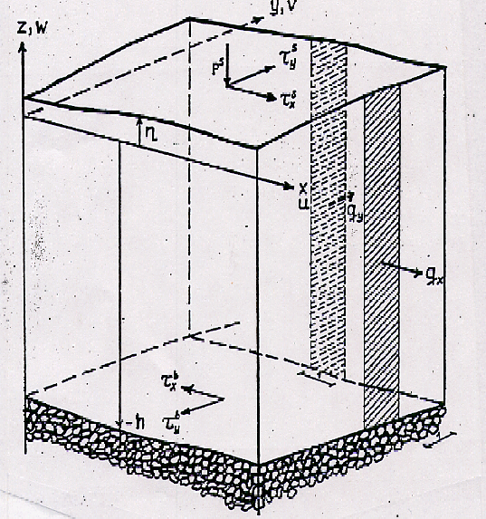

Luis Zambrano-Cruzatty, Ph.D.
Fall 2023
Contents
- Navier-Stoke's equations
- Modeling turbulence
- Modeling sediment transport
- Coupling models
- Available software
Objectives covered in this lecture
- [O4]: Develop an understanding of modeling techniques to simulate erosive and sediment transport processes.
After this lecture we will able to:
- Describe the fundamental principles involved in modeling sediment transport processes.
- Describe the governing equations to model sediment transport.
- Enlist available modeling software.
Fundamental principles
Sediment transport modeling is based on
fundamental conservation principles:
- Momentum balance
- Mass balance
- Energy balance
We apply these principles assuming water and sediments are a continuum. Thus we rely on continuum mechanics principles
Description of motion
Motion can be described using two frames: (i) the Lagrangian or the Eulerian frame. In both frames we want to track state parameters of a material point, but the difference is how we track them.
Eulerian description
State parameters are tracked from a fixed location. Thus, the change of state parameter depends on location and time
Lagrangian description
State parameters are tracked following the material point location. Thus, only time is important.
Material derivative
\(\cfrac{D (\cdot)}{Dt}\)= is the change of a state parameter \((\cdot)\) following the material point location.
We can use the material derivative to relate the Eulerian and Lagrangian description of movement.
\( \cfrac{D (*)}{Dt}= \cfrac{\partial (*)}{\partial t} + \mathbf{v} \cdot \nabla (*) \)
Momentum balance of water
The
momentum balance equation is a continuum is expressed as:
\( \cfrac{D \mathbf{v}}{Dt} = \cfrac{1}{\rho} \nabla \cdot \mathbf{\sigma} + \mathbf{g} \)
\(\mathbf{v}=\) material point velocity, \(\rho=\) water density, \(\mathbf{\sigma}=\) Cauchy stress tensor, \(\mathbf{g}=\) gravity acceleration
If we use an
Eulerian description of motion, the momentum balance equation becomes:
\( \cfrac{\partial \mathbf{v}}{\partial t} + \mathbf{v} \cdot \nabla \mathbf{v} = \cfrac{1}{\rho} \nabla \cdot \mathbf{\sigma} + \mathbf{g} \)
Constitutive model
To complete the momentum balance equation we need to define the Cauchy stress tensor \(\mathbf{\sigma}\). This is done using a constitutive model that relates the stress tensor to the strain tensor \(\mathbf{\varepsilon}\).
First, let's decompose the stress tensor into an spherical and deviatoric component:
\(\mathbf{\sigma}= - p \mathbf{I} + \mathbf{\tau}\)
\(\mathbf{I}=\) identity tensor, \(p=\) hydrostatic pressure, \(\mathbf{\tau}=\) deviatoric stress tensor
We now need a model. Let's assume a
Newtonian compressible fluid where \(\tau \alpha dv/dy\) thus:
\(\mathbf{\tau}= \mu (\nabla \mathbf{v}+ \nabla \mathbf{v}^T) + \lambda (\nabla \cdot \mathbf{v}) \mathbf{I}\)
Navier-Stokes equations
Replacing the constitutive model in the momentum balance equation we get the
the compressible Navier-Stokes equation:
\(\rho \left(\cfrac{\partial \mathbf{v}}{\partial t}+ \mathbf{v} \cdot \nabla \mathbf{v} \right)= -\nabla p + \nabla \cdot [\mu (\nabla \mathbf{v} + \nabla \mathbf{v}^T) ] + \nabla \cdot [\lambda (\nabla \cdot \mathbf{v}) \mathbf{I}] + \rho \mathbf {g}\)
Note: The equation has two unknowns: \(\mathbf{v}\) and \(p\). An state equation for \(p\) completes the system. For water it is the relationship between pressure and volumetric strain, and for gas the Ideal gas law.
The incompressible Navier-Stokes equations are found using \(\nabla \cdot \mathbf{v}=0 \), which arises from mass balance.
\(\mu=\) fluid viscosity, and \(\lambda= -2/3 \mu\) is volume viscosity.
We can use Navier-Stokes equations to model complex flow problems. However:
- Recovering turbulent structures is highly dependent on mesh size resolution.
- For near-incompressible fluids like water, it will demand intensive computational power due to the high Bulk modulus of water.
Thus, another alternative is required to capture turbulence.
Reynolds decomposition
The Reynolds decomposition is a statistical approach to model turbulence. It is based on the assumption that the velocity can be decomposed into a mean and a fluctuating component.
Thus, we can write:
\(\mathbf{v}= \bar{\mathbf{U}} + \mathbf{u}'\)
\(\bar{\mathbf{U}} =\) mean velocity, \(\mathbf{u}'=\) fluctuating velocity
Is the average value over time of a state parameter \((*)\).
\(\overline{(*)}= \lim_{T \rightarrow \infty} \cfrac{1}{T} \operatorname{\Large \int}_0^T (*) dt \)
This procedure is applied to derive the
Reynolds-averaged Navier-Stokes (RANS) equations.
\( \rho ( \textcolor{blue}{\underbrace{\overline{\mathbf{U}}_t}_{\substack{\text{Velocity} \\ \text{change}}}} +\textcolor{red}{\underbrace{\overline{\mathbf{U}} \cdot \nabla \overline{\mathbf{U}}}_{\text{Advection}}})= \textcolor{green}{\underbrace{- \nabla \overline{p}}_{\substack{ \text{Pressure} \\ \text{diffusion}}}} + \textcolor{purple}{ \underbrace{\nabla \cdot \mu (\nabla \overline{\mathbf{U}}+ \nabla \overline{\mathbf{U}}^T)}_{\substack{\text{Laminar} \\ \text{diffusion}}}}- \textcolor{brown}{ \underbrace{\nabla \cdot \rho \overline{\mathbf{u'} \otimes \mathbf{u'}}}_{\substack{\text{Turbulent} \\ \text{diffusion}}}} \)
- The term \( \mathbf{R}=\rho \overline{\mathbf{u'} \otimes \mathbf{u'}}\) is a 2nd order tensor also known as Reynolds stress tensor
Note that for incompressible flow we must add the
continuity equation to the RANS equations:
\(\nabla \cdot \overline{\mathbf{U}}=0 \)
\(\nabla \cdot \mathbf{u}'=0\)
Note: We have added six new unknowns to the governing equation. We need to relate \(\mathbf{R}\) to the average values to solve the problem. These relationships are known as closure models
For detailed information about RANS derivation watch the next two videos.
Eddy Viscosity
Boussinesq proposed to simulate the turbulent diffusion as a
molecular diffusion process. He termed this process as
eddy viscosity
\(- \overline{\mathbf{u}' \otimes \mathbf{u}'}= \nu_t (\nabla \overline{\mathbf{U}} + \nabla \overline{\mathbf{U}}^T )- \cfrac{2}{3} k \mathbf{I} \)
\(\nu_t=\) Eddy viscosity
\(k= \cfrac{1}{2} \text{tr}(\overline{\mathbf{u}' \otimes \mathbf{u}'})\) is the kinetic energy of the turbulent fluctuations.
Prandtl's mixing length concept
Prandtl realized that the eddy viscosity is
not a constant and proposed a
mixing length concept. He proposed this along with the concept of
boundary layers.
\(\nu_t=\left|\cfrac{\partial u}{\partial y} \right| l^2_m\)
\(l_m=\) Is the mixing length. This is a function of observed boundary layers and must be calibrated accordingly.
\(k-\varepsilon\) Turbulent model
The
\(k-\varepsilon\) model is a
two-equation model. It is based on the
transport equations for the
turbulent kinetic energy \(k\) and the
turbulent dissipation rate \(\varepsilon\).
\(\nu_t= \rho C_{\mu} \cfrac{k^2}{\varepsilon}\)
\(C_\mu=0.89\) Empirical constant
Transport equations are defined for both \(k\) and \(\varepsilon\):
Rate of change of \(k|\varepsilon\) + Transport of \(k|\varepsilon\) = Transport of \(k|\varepsilon\) by diffusion + Production of \(k|\varepsilon\) + Dissipation of \(k|\varepsilon\)
The CFD world
Computational fluid dynamics is a inter- and muli-disciplinary field that combines fluid mechanics, numerical analysis, and computer science to solve and analyze problems that involve fluid flows.
Available CFD techniques:
- Direct modeling
- RANS modeling
- \(k-\varepsilon\) model
- \(k- \omega\) modeling
- Spalart-Allmaras model
- Large Eddy Simulation (LES)
- Detached Eddy Simulation (DES)
- And counting...
Note that for water scour problems, you require to simulate a free surface problem.
- You can use a double phase model (two-liquids) simulating the water-air interface.
- Level-set methods are aso used to model the free surface evolution.
- CFD models might be used for local scour simulations like scour around piers. It would be too expensive for large-scale models.
- For large-scale problems depth averaged models are used.
Sediment transport
To simulate the morphodynamic cycle we need three components namely hydrodynamics, sediment transport, and morphology.
Depth averaged governing equations
Depth averaged equations are used to reduce a dimension of the problem, while allowing to simulate free surface problems. Thus, they are computationally efficient and can be used in large-scale modeling.
There are some key assumptions made for 2D depth averaged solutions:
- Flow in the vertical direction is negligible \(\implies \frac{\partial \bar{p}}{\partial z}= - \rho g\)

Based on the coordinate system on the left we can now define a depth averaging operator.
\(\tilde{*}_z\)
\(\tilde{*}_z= \cfrac{1}{H} \int_{-h}^{\eta} * dz \)
\(H= \eta+h\) is the water depth.
\(\eta=\) water elevation from datum.
\(h=\) water depth from datum.
Shallow water equations
The shallow water equations are derived from the depth averaged Navier-Stokes equations.
Continuity equation (mass balance)
\(\cfrac{\partial \eta}{\partial t}+ \nabla \cdot (\tilde{\boldsymbol{U}})=0\)
Note: the gradient operator is different for 2D conditions:
\(\nabla= \left(\cfrac{\partial}{\partial x}, \ \cfrac{\partial}{\partial y}\right)\)
Momentum balance equation
\(\cfrac{\partial \tilde{\boldsymbol{U}}}{\partial t}+ \tilde{\boldsymbol{U}} \cdot \nabla \tilde{\boldsymbol{U}}= -g \nabla \eta +\nabla \cdot \tilde{\overline{\boldsymbol{\sigma}-\hat{\boldsymbol{u}} \otimes \hat{\boldsymbol{u}}}} + \cfrac{1}{H \tilde{\rho}} (\boldsymbol{\tau}^s- \boldsymbol{\tau}^b) \)
Mass balance equation
In a continuum with
incompressible fluid, the
mass balance equation is expressed as:
\(\cfrac{D \rho}{Dt}=0\)